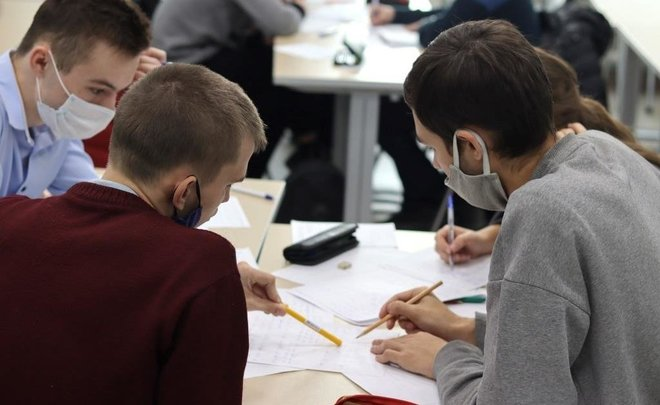

Объявлено новое усложнение для поступления в 2022 году
Усиление конкуренции за бюджетные места, усложнение прогнозов на поступление и бессрочная аккредитация вузов

На главную страницу
На страницу новостей
Реформы в системе высшего образования идут постоянно, но большая часть из них практически не затрагивает конечных потребителей — абитуриентов, студентов и их родителей. Разобраться в том, что именно меняется, порой сложно даже тем, кто в этой системе работает, не говоря уже о тех, кто сталкивается с образованием при поступлении, да и во время учебы. Но в 2022-м будет несколько новшеств, понимание которых может облегчить жизнь и абитуриентам, и действующим студентам.
НОВОСТЬ №1 — ПЕРЕХОД К БЕССРОЧНОЙ АККРЕДИТАЦИИ
Лицензия на образовательную деятельность дает вузу право учить студентов. Платящие за обучение при этом получают возможность получить налоговый вычет. А аккредитация вуза дает право выдавать диплом государственного образца. И если лицензия давно уже стала бессрочной, то аккредитацию надо было подтверждать раз в несколько лет.
Жизнь в образовательной организации на период ее подготовки и проведения замирала, потому что все силы были брошены на ее прохождение. С 1 марта этого не будет — надзорные органы будут анализировать сайты образовательных организаций, на которых вывешивается все необходимое для анализа их работы.
Но если у вас сложилось впечатление, что жизнь вузов в результате станет проще, то оно обманчиво — при предложенном подходе аккредитация будет идти каждый день, а не раз в 6 лет, так что надо быть в тонусе постоянно. А вот те, кто учится, оказываются в выигрыше — теперь полная информация обо всех программах, преподавателях, вакантных местах и прочих аспектах жизни университета становится доступна в любое время и из любой точки мира.
НОВОСТЬ №2 — ПОСТУПЛЕНИЕ И ЗАЩИТА ПЕРСОНАЛЬНЫХ ДАННЫХ
Вторая новость — в общем-то, не совсем новость. В 2021-м этот подход уже был применен: в рейтинговых списках поступающих впервые вместо привычных фамилии, имени и отчества абитуриента появились наборы цифр. Университеты имели право использовать либо СНИЛС абитуриента, либо внутренний номер, присвоенный в собственной системе.
Эта практика была, похоже, признана успешной, хотя и оставила множество поступающих «за бортом» желанного вуза — если по ФИО можно было посмотреть, куда еще подали документы твои конкуренты за бюджетное место, и хоть как-то спрогнозировать их решение, то с наборами цифр самостоятельная оценка перспектив конкурентов становилась проблемой.
В результате многие только утром, после закрытия наборов, узнавали, что они не поступили ни в вуз мечты, ни в другие — ведь выбор надо было сделать в одно и то же время.
НОВОСТЬ №3 — ИЗМЕНЕНИЯ ДЛЯ ТЕХ, КТО ПОСТУПАЕТ В ВУЗ ПОСЛЕ КОЛЛЕДЖА
Уже несколько лет наблюдается стабильная тенденция: около половины школьников после 9 класса переходит в колледжи, ресурсные центры и другие организации, дающие среднее профессиональное образование.
Частично это связано с тем, что, получив диплом колледжа, можно поступать в вузы, минуя ЕГЭ — для вчерашних колледжистов университеты могут устанавливать собственные вступительные испытания и опираться на их результаты, а не на единый государственный экзамен.
При этом ограничения на выбор профессии не было — можно было изучать бухгалтерский учет в колледже, а поступать на «Нефтегазовое дело». С 2022-го ситуация поменяется: профиль среднего профессионального образования будет иметь значение при поступлении. И конечно, для колледжистов остается возможность сдавать ЕГЭ и поступать по его результатам.
НОВОСТЬ №4 — ПОЛУЧЕНИЕ БАЛЛОВ ИНДИВИДУАЛЬНЫХ ДОСТИЖЕНИЙ
Уже несколько лет при поступлении вузы имеют право добавить поступающему до 10 баллов индивидуальных достижений. На фоне 300 баллов (а иногда — 400), максимальных при поступлении (3 ЕГЭ по 100 баллов максимум), еще 10 кажутся незначительной прибавкой к нескольким сотням. Но именно они часто были решающими при поступлении в топовые университеты. Более того, на некоторые направления (например, в НИУ ВШЭ) проходной балл был 310, а не 300.
С 2022 года перечень мероприятий, за которые начисляются баллы индивидуальных достижений, меняется. Если вы планируете поступать на направление с большой конкуренцией — уточните, получите ли вы свои баллы за участие в мероприятиях, которые до 14 сентября 2021 года давали вам такую возможность.
НОВОСТЬ №5 — РАЗВИТИЕ МЕЖДУНАРОДНОГО СОТРУДНИЧЕСТВА И УСИЛЕНИЕ КОНКУРЕНЦИИ ЗА БЮДЖЕТ
Интеграция с Беларусью изменит ситуацию и при поступлении в российские вузы. Граждане этого государства и раньше могли претендовать на бюджетные места, но для этого они должны были сдавать вступительные испытания, так как результаты национального единого экзамена не принимались в качестве аналога ЕГЭ.
С 2022 года белорусские абитуриенты, сдавшие централизованный экзамен в 2021 или 2022 году, смогут подать эти результаты в российские вузы — и участвовать в конкурсе на общих основаниях, вместе с российскими выпускниками.
Нововведений в высшем образовании, конечно, больше, чем перечисленные пять, здесь перечислены только самые значимые. Вся информация о поступлении в наступившем году уже размещена на сайтах вузов, поэтому уже можно спланировать, что вы будете делать летом при поступлении. Остается только пожелать переступить порог желанного университета в сентябре!
Мы взяли эту информацию отсюда
На главную страницу
На страницу новостей